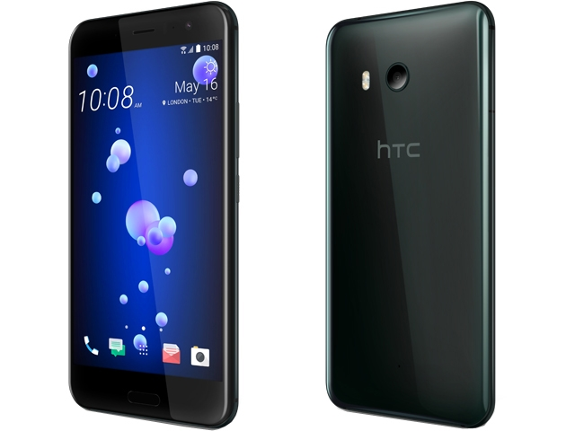

各大廠牌手機優劣勢分析
| 外觀 | 品牌 | 相機 | 價格 | 效能 | NFC行動支付 | 防水 | 充電口 | 屏幕比例材質 | ROM容量 | 載波聚合 | 快速充電 | 耳機孔 |  | htcu11 | 高階 | 市場價格14300 | 高通S835處理器 | 有 | IP67 | Tybe-C 3.1 | 顯示比例16:95.5 吋 2K (2560 x 1440) 解析度的 SuperLCD 5 螢幕 | 4g/6g 較貴 | 2G GSM 四頻、3G WCDMA 850 + 900 + 2100 4G LTE 700 + 900 + 1800 + FDD 2600 + TDD 2600 |